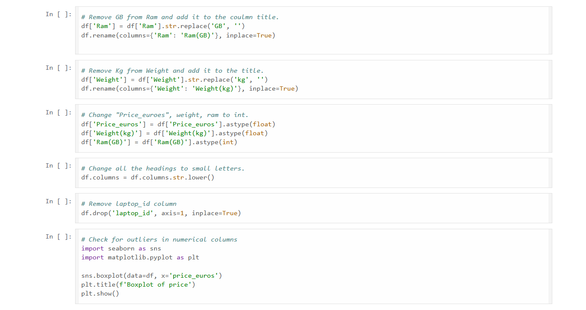
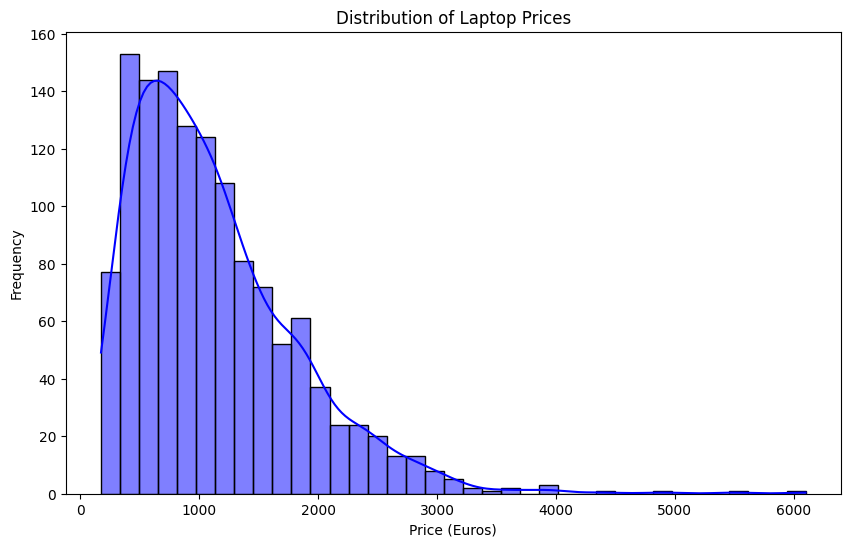

Laptop Price Prediction
Machine Learning | Regression | EDA | Feature Engineering
Project File: View on GitHub
Project Overview
This machine learning project aims to predict laptop prices based on various technical specifications. The dataset includes features such as RAM, CPU, GPU, weight, screen size, and operating system. The ultimate goal is to assist consumers or businesses in estimating appropriate pricing for laptops based on their configurations.
Tools & Technologies Used
- Python (Pandas, NumPy): Data preprocessing and feature engineering
- Matplotlib & Seaborn: Exploratory Data Analysis (EDA) and visualization
- Scikit-learn: Model training and evaluation
- Jupyter Notebook: Development environment
- GitHub: Version control and project hosting
Key Insights
- Categorical Encoding: Applied Label Encoding to categorical columns such as brand and operating system to make the data suitable for modeling.
- Feature Importance: Identified that RAM size, GPU type, and screen resolution were among the most important features influencing laptop price.
- Data Cleaning: Standardized units (e.g., removing "GB" from RAM/Storage and "kg" from weight) and handled missing values.
- Correlation Discovery: Found strong relationships between technical specifications and price using correlation matrices and scatter plots.
Business Metrics
- R² Score: Approximately 85% (showing strong predictive performance)
- Top Features Influencing Price:
- RAM
- GPU
- Screen Resolution
Recommendations
- Retail Integration: Integrate the model into online stores to dynamically suggest prices for laptops based on specs.
- Consumer Tools: Provide users with estimated laptop resale values based on their device’s configuration.
- Manufacturing Insights: Help manufacturers understand which specifications have the most pricing impact when designing new models.
Data Preparation Process
1. Data Cleaning and Preprocessing
- Removed missing or null values
- Cleaned text fields (e.g., removed "GB", "kg")
- Filtered out extreme outlier prices
2. Feature Engineering
- Applied Label Encoding to categorical columns
- Extracted and standardized numerical fields
3. EDA & Visualization
- Visualized feature distributions and relationships using boxplots, histograms, and heatmaps
- Analyzed which features most strongly influence price
4. Model Training & Evaluation
- Split data into features (X) and target (y)
- Used
RandomForestRegressorfor training the model - Evaluated performance using Mean Squared Error and R² Score
Project Summary
Built a Random Forest Regression model to predict laptop prices based on technical specifications such as RAM, GPU, screen size, and weight. Achieved an R² score of ~85%, demonstrating strong model accuracy for predicting laptop prices.